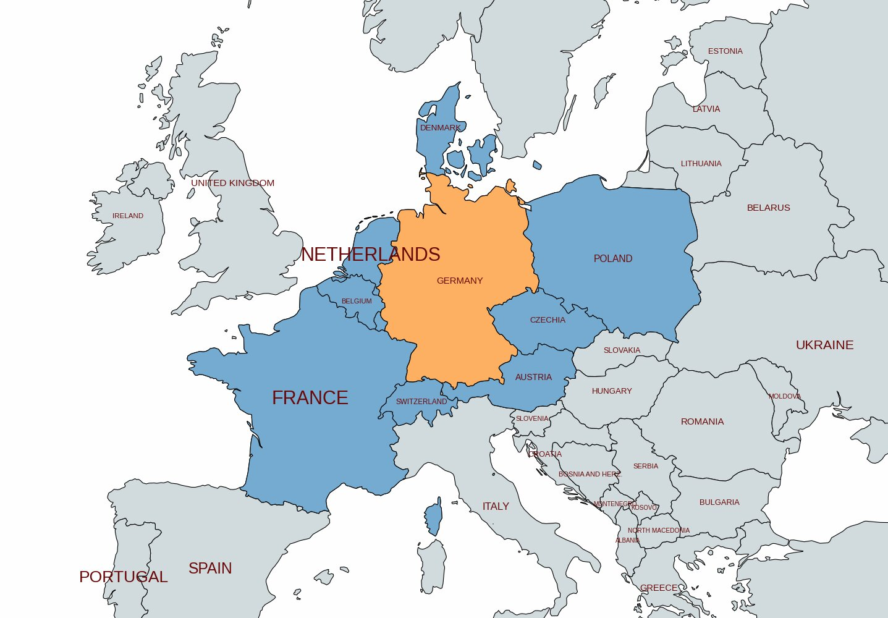
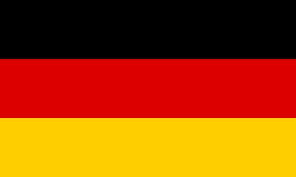
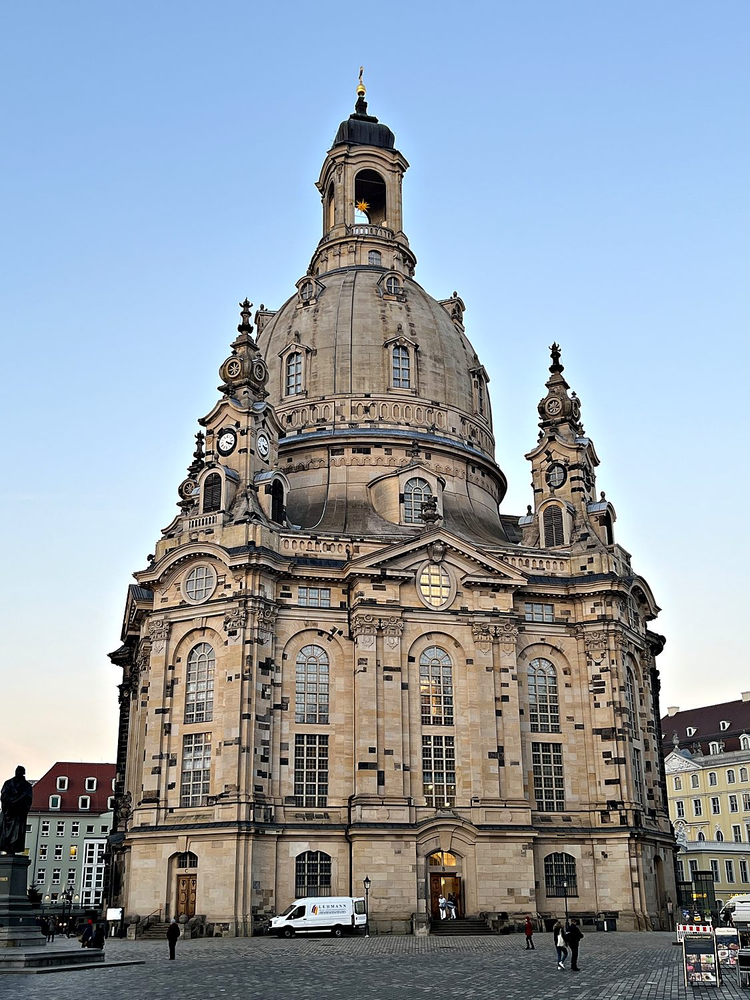
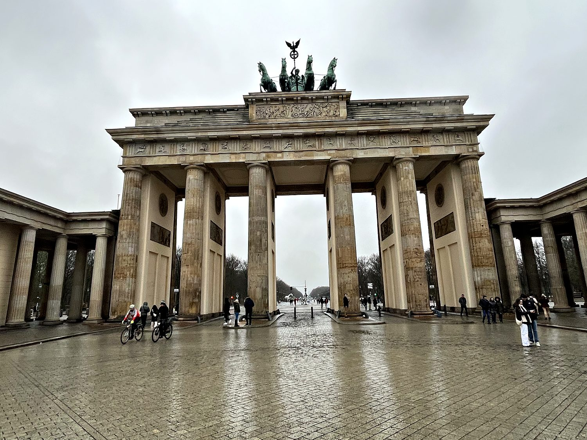
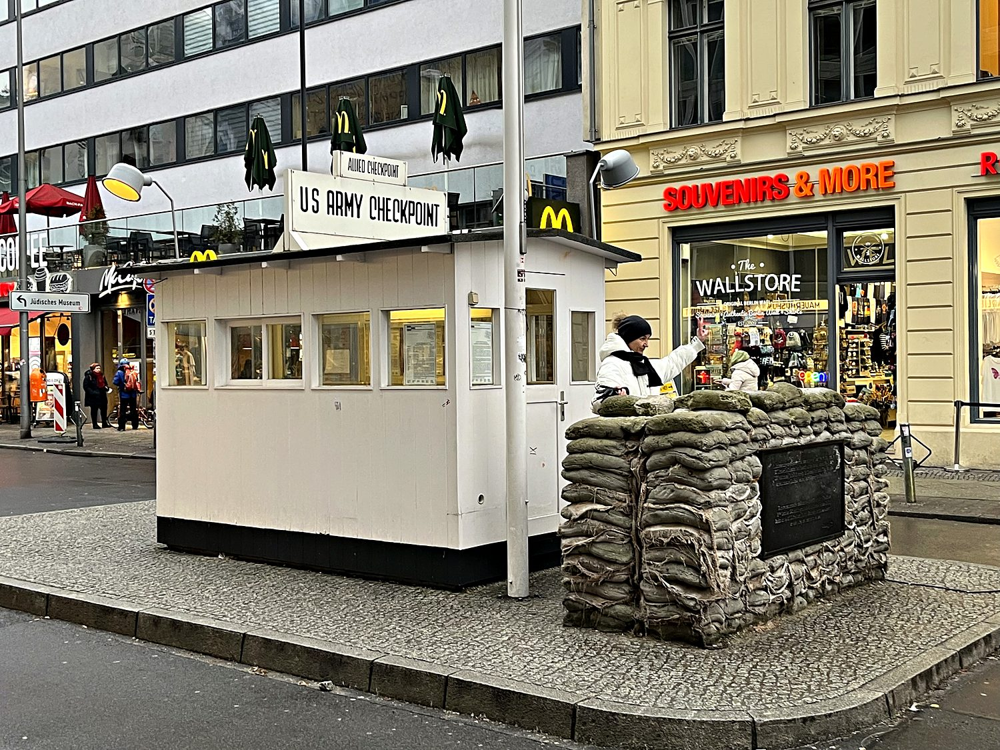

I traveled through eastern Germany in January 2024, in the dead of a Central European winter, with a group of friends who took great and repeated joy in pointing out how visibly cold I looked at all times. Our first stop was not a city at all but the Bastei, a formation of towering sandstone pinnacles in the region grandly named Saxon Switzerland, about an hour outside Dresden near the little town of Rathen. Getting there was its own adventure: a rail strike forced us onto a replacement bus, and then a small ferry across the Elbe, which was running so fast that the boat crossed the river at an almost comical angle. The reward was worth it. We climbed up through the crags (one of which looked uncannily like a giant clenched fist) to the Basteibrücke, a slender stone bridge from 1851 that leaps between the rock towers like something out of Lord of the Rings.
From the Bastei we continued to Dresden, the capital of Saxony, whose old town is a dense cluster of baroque palaces, churches, and opera houses in dark, weathered stone. It looks far older than it actually is, in part because much of it has been painstakingly rebuilt after the city’s destruction during World War II. My friend Andrew marched us efficiently past the Frauenkirche, the Zwinger palace, the Semperoper opera house, and Dresden Castle before we boarded a night bus north to Berlin. The German capital could hardly be more different: sprawling, gritty, and layered with the scars and monuments of the 20th century. Over a few frigid days we worked our way through Alexanderplatz, the Berliner Dom, the Reichstag with its glass dome, the Brandenburg Gate, Checkpoint Charlie, and a sobering sequence of memorials and museums that make Berlin feel less like a city you tour than one you reckon with.

For most of its history, “Germany” was not a country at all but a patchwork of hundreds of kingdoms, duchies, and free cities loosely bound within the Holy Roman Empire. It was only in 1871 that the statesman Otto von Bismarck forged these pieces into a single unified German Empire under Prussian leadership. This late arrival to European nationhood quickly became one of the continent's dominant industrial and military powers. That trajectory led into the catastrophe of World War I. The subsequent fragile democracy of the Weimar Republic collapsed under economic ruin into the Nazi dictatorship of Adolf Hitler, the Second World War, and the systematic murder of six million Jews in the Holocaust. Berlin, as the capital of that regime, is today unusually unflinching about confronting this past, its monuments and museums serving as deliberate acts of national memory.

Germany's defeat in 1945 left the country in ruins and, soon after, divided. As the Cold War set in, the western zones occupied by the United States, Britain, and France became the democratic Federal Republic, while the Soviet-occupied east became the communist German Democratic Republic. Berlin, stranded inside the east, was itself split, and in 1961 the East German government sealed the division with the Berlin Wall, which cut the city in two for 28 years and became the defining symbol of a divided Europe. When the Wall finally fell in November 1989, it set in motion the reunification of Germany in 1990 and, with it, the end of the Cold War. Walking the line where the Wall once stood, now marked by a double row of cobblestones running through the modern city, it is genuinely hard to believe how recently all of this was still an open wound.
No building tells Dresden's story better than the Frauenkirche, the Church of Our Lady. This magnificent domed Protestant church, completed in 1743, was the crowning glory of the city's skyline until February 1945, when Allied firebombing raids in the final months of the war reduced Dresden to ash and the church collapsed into rubble. Through the four decades of communist rule that followed, the East German authorities deliberately left the ruins untouched as a stark anti-war memorial. Only after reunification was the Frauenkirche rebuilt, stone by stone, using thousands of the original blackened blocks salvaged from the pile and fitted back into place. You can still spot these as they stand out against the pale new sandstone. Reconsecrated in 2005, it stands today as one of Europe's great monuments to destruction, memory, and reconciliation.

The Brandenburg Gate is the enduring symbol of Berlin, and indeed of Germany itself. Completed in 1791 as a triumphal city gate and crowned by the goddess of victory driving her four-horse chariot, it has stood witness to nearly every turn of German history. Napoleon marched through it, the Nazis paraded beneath it, and for the 28 years of the Berlin Wall it sat marooned in the no-man's-land between East and West, sealed off and unreachable. When crowds finally streamed through it after the Wall fell, the gate became the image of a nation made whole again. Standing in front of it on a gray, drizzly winter afternoon, largely deserted apart from a few cyclists and tourists, it was striking to think how much history had funneled through this single elegant colonnade.

A short walk away stands Checkpoint Charlie, the most famous crossing point of the Cold War. This was the gap in the Wall where the American sector met the Soviet one, and where foreigners and diplomats passed between the two Berlins. The little white guardhouse here is a reconstruction, but the history is very real: in October 1961, American and Soviet tanks faced off directly across this line in a tense standoff that brought the superpowers about as close to shooting as they ever came in Europe. I had not appreciated, until standing on the spot, just how physically close the two sides really were. Today the checkpoint sits incongruously among fast-food shops and souvenir stands, a slightly surreal reminder that the front line of a global ideological struggle once ran right down this ordinary Berlin street.
